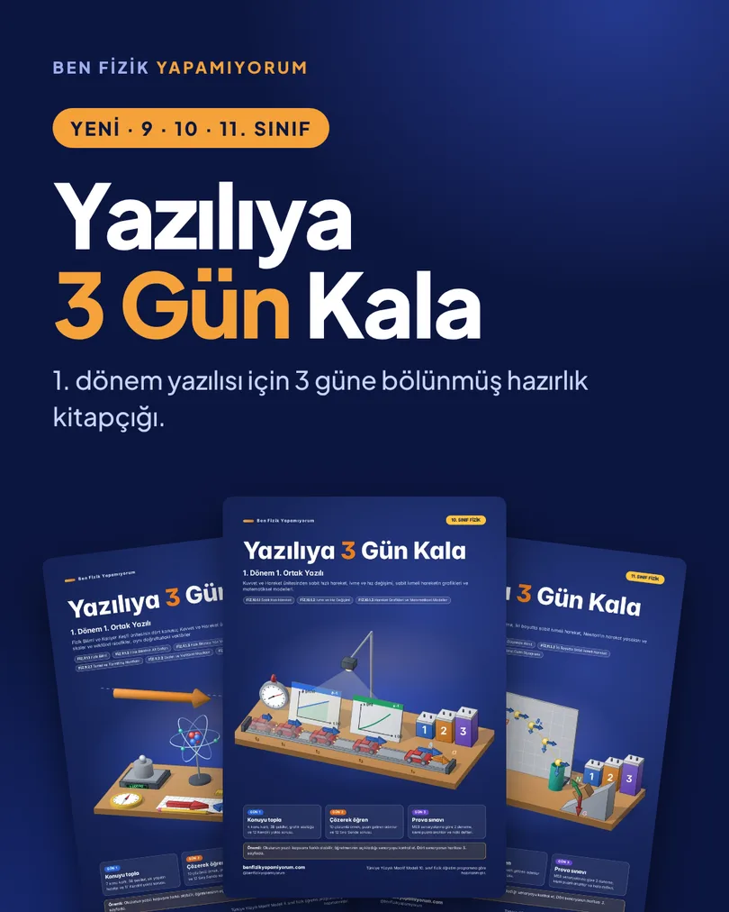
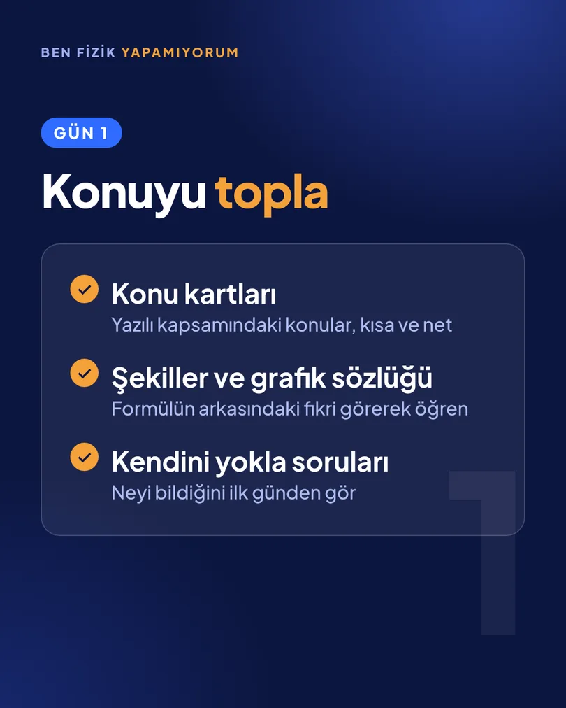
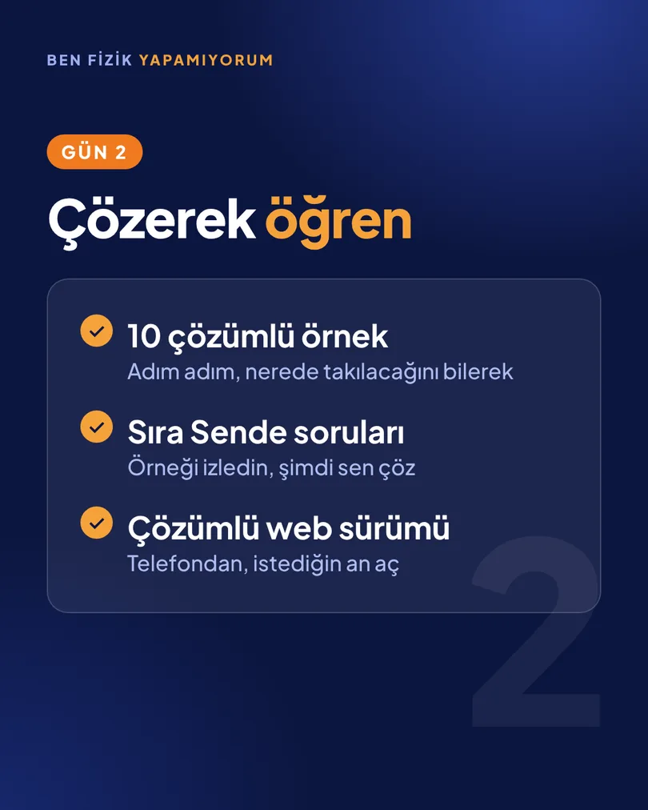
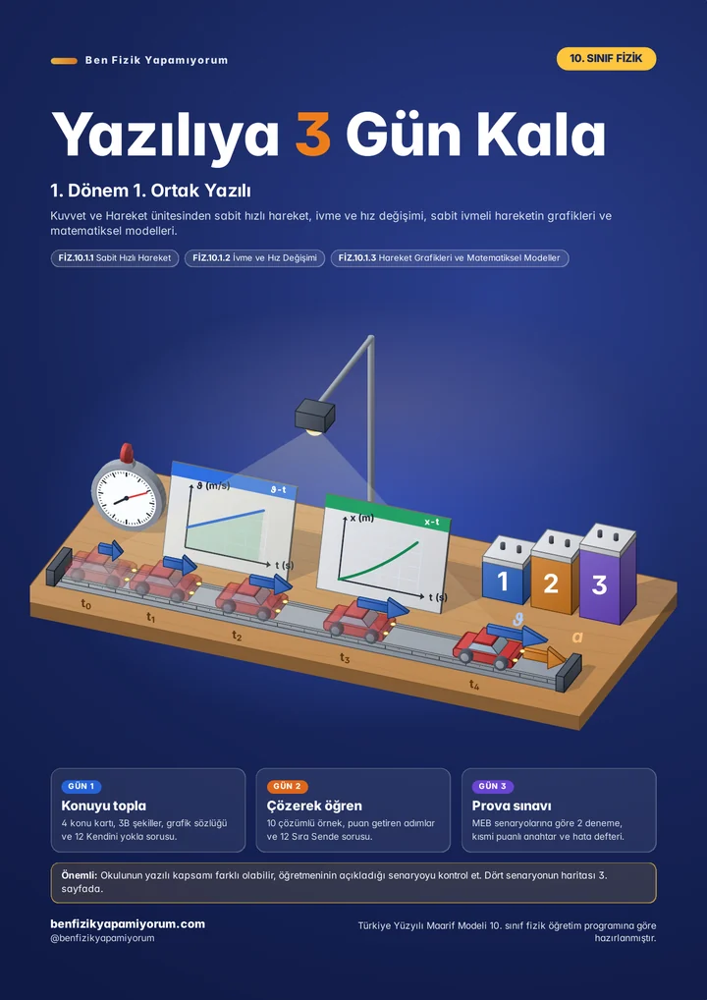
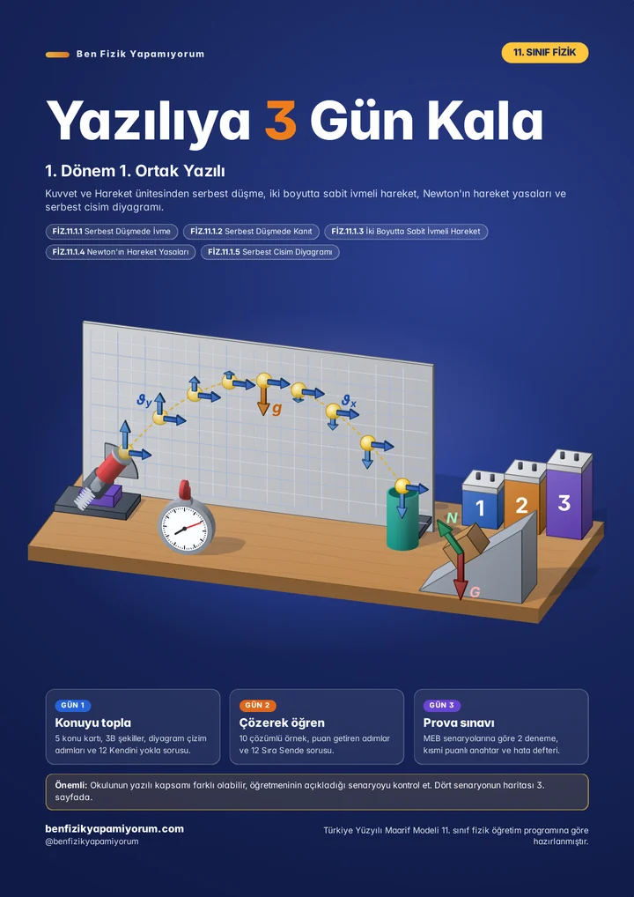

Konuyu topla
- Konu kartları
- Şekiller ve grafik sözlüğü
- Kendini yokla soruları
YENİ / 9, 10, 11. SINIF / 1. DÖNEM YAZILI
Yazılıya 3 gün mü kaldı? Nereden başlayacağını düşünme. Kitapçık o 3 günü senin yerine planlıyor: önce konuyu topla, sonra çözerek öğren, son gün prova sınavı çöz.

Yazılı başına tek kitapçık, 50–66 sayfa PDF: 10 çözümlü örnek, MEB'in yayımladığı her senaryo için ayrı bir deneme sınavı ve 3 günlük çalışma planı. Her örneğin çözümü adım adım, web sürümünde telefondan da açılıyor.




Instagram'da dağıttığım 37 sayfalık ücretsiz notlar konuyu öğrenmen ve pekiştirmen içindir. Bu kitapçık ise yalnızca yazılı haftası içindir. Okulunun açıkladığı senaryoya göre hazırlanırsın.
| Konu | Ücretsiz notlar | Yazılıya 3 Gün Kala |
|---|---|---|
| Amaç | Konuyu öğrenmek ve pekiştirmek. | Yazılıdan önceki 3 günü planlamak ve prova yapmak. |
| Deneme | Yazılı provası. | MEB'in yayımladığı her senaryo için ayrı bir deneme, yazılı başına 4 ya da 5. Her biri 100 puan ve 40 dakika, o senaryonun soru sayısına ve konu dağılımına göre kurulmuştur. |
| Senaryo haritası | Yok. | Okulunun senaryosuna göre hangi konuya ağırlık vereceğini ve hangi denemeyi çözeceğini, o denemenin sayfasıyla birlikte gösterir. |
| Cevap anahtarı | Puanlama ölçütleri. | Her soru alt maddelere bölünür, hangi adımın kaç puan getirdiği yazılıdır. |
| Çözümlü soru | 6 örnek. | 10 çözümlü örnek ve 12 Sıra Sende sorusu. Her örnekte önce kendin denersin, puan getiren adımlar işaretlidir. |
| Sınav sabahı | Yok. | Formül kartı, 10 tuzak ve 8 soruluk sözlü tekrar tek sayfada. |
| Web sürümü | Yalnızca PDF. | 40 dakikalık sayaç, adım adım açılan çözümler ve puanını konu konu gösteren Sonuçlarım paneli. Telefonda da açılır. |
Karşılaştırma, ücretsiz notların 10. sınıf sürümüne göredir.
Her kitapçık o sınıfın 1. dönem yazılısı için. İstersen yalnızca bir yazılıyı (₺199), istersen 1. + 2. yazılı paketini (₺299, ayrı ayrı almaktan ₺99 daha uygun) al. Ödeme Shopier üzerinden.

1. + 2. yazılı paketi ₺299
Paketi al, ₺299 →
1. + 2. yazılı paketi ₺299
Paketi al, ₺299 →
1. + 2. yazılı paketi ₺299
Paketi al, ₺299 →Okulların yazılı kapsamı değişebilir. Kitapçığın 3. sayfasında MEB senaryolarının haritası var; öğretmeninin açıkladığı senaryoyu oradan kontrol et.
1. dönem 1. ve 2. yazılı. Tek yazılı ₺199, iki yazılı birlikte paket ₺299 (₺99 daha uygun).
Ücretsiz yazılı sorularını ve 37 sayfalık ücretsiz PDF’leri kullanabilirsin.
Tüm konuları uzun uzun çalışmak için Yapabilirim 9, 10 ve 11 paketlerine bak. Yazılıya 3 Gün Kala ise son 3 gün içindir.